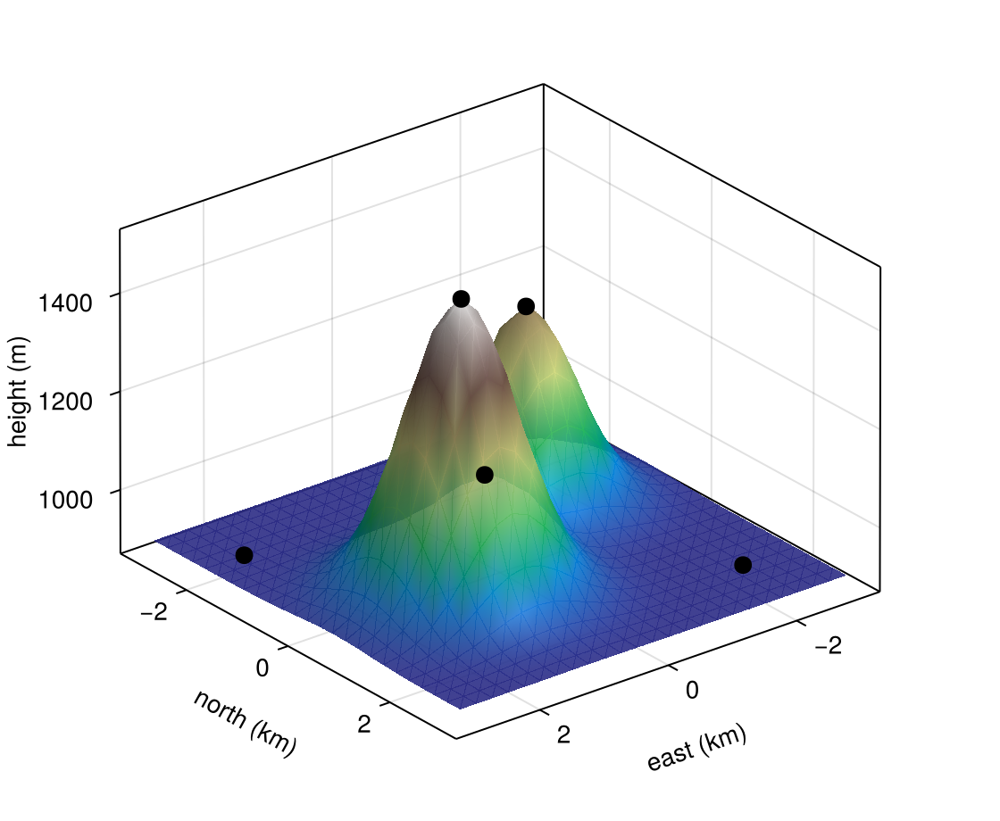

Explore a 3D figure
On an Axis3, the reader hovers a surface to read its height, hovers or clicks a point to see and keep its data, and drags to turn the view. The example below is a terrain surface with five weather stations on it.
Plot on an Axis3
Draw the plots as you would without Masque. masque(fig) gives each surface and scatter on an Axis3 a tooltip and a click, so hovering the surface below shows the height under the pointer:
Notebook as text
Hover the surface to read its height, or a station to see its name, then click a station.
begin
hill(x, y) = 900 + 600 * exp(-((x - 1)^2 + (y - 0.5)^2)) + 400 * exp(-((x + 1.2)^2 + (y + 1)^2) / 0.8)
xs = range(-3, 3; length = 25)
ys = range(-3, 3; length = 25)
stations = [
(; name = "Ridge", x = 1.0, y = 0.5),
(; name = "Saddle", x = 0.0, y = -0.3),
(; name = "East peak", x = -1.2, y = -1.0),
(; name = "Valley", x = -2.2, y = 2.0),
(; name = "Plateau", x = 2.4, y = -2.0),
]
elevation = [round(Int, hill(s.x, s.y)) for s in stations]
nothing
endbegin
fig = Figure(size = (560, 460))
ax = Axis3(fig[1, 1]; azimuth = 0.9, elevation = 0.45, xlabel = "east (km)", ylabel = "north (km)", zlabel = "height (m)")
surface!(ax, xs, ys, [hill(x, y) for x in xs, y in ys]; colormap = :terrain, alpha = 0.9)
sc = scatter!(
ax, [s.x for s in stations], [s.y for s in stations], elevation;
color = :black, markersize = 14,
)
sites = interactables(sc; payloads = [(; name = s.name, height = h) for (s, h) in zip(stations, elevation)])
nothing
end@bind pick masque(fig, sites; bind = sc)
isnothing(pick) ? "click a station" : "$(pick.name): $(pick.height) m"click a stationThis example doesn't turn when you drag it, because each turn has Julia draw the figure again and this site has no Julia running behind it (see Pan and orbit preview). To try turning it, download the notebook and add the two lines from Orbit the view.
Name the stations
A station is a point in a scatter, so on its own its tooltip shows only its coordinates. To add its name and height, give the scatter one payload per station:
sites = interactables(sc; payloads = [(; name = s.name, height = h) for (s, h) in zip(stations, elevation)])The tooltip lists the payload's fields above the coordinates, and a click carries them too. Tooltips shows how to choose what the tooltip says.
Keep the clicked station
bind = sc makes pick the station you last clicked, until you click empty space, so the last cell can read pick.name and pick.height. Only the stations take clicks into pick: hovering the surface shows its height, but a click on it does not change pick.
Orbit the view
To let the reader turn the plot, add a ViewInteractable for the axis and pass it to the same masque call:
orbit = ViewInteractable(ax)
@bind pick masque(fig, sites, orbit; bind = sc)Dragging then turns the camera, and the stations keep their tooltips and clicks at every angle. Pan, zoom and orbit has the zoom and pan controls, and how to turn several panels together with linkcameras!.
Limitations
- A surface responds only on an
Axis3. On a 2DAxis, draw the same matrix withheatmapto read its values; see Heatmaps and images. - A sphere from
meshscatterstops responding once its center leaves the axis box. Zoom out, or turn the view, to bring it back; see Orbit anAxis3.
Where to go next
- Pan, zoom and orbit for every way to move the view.
- Supported plots and axes for which 3D plots respond.
- Selection to keep several stations at once.
- The Filter one plot from another and Compare a cluster examples, which use the picks on one plot in another.